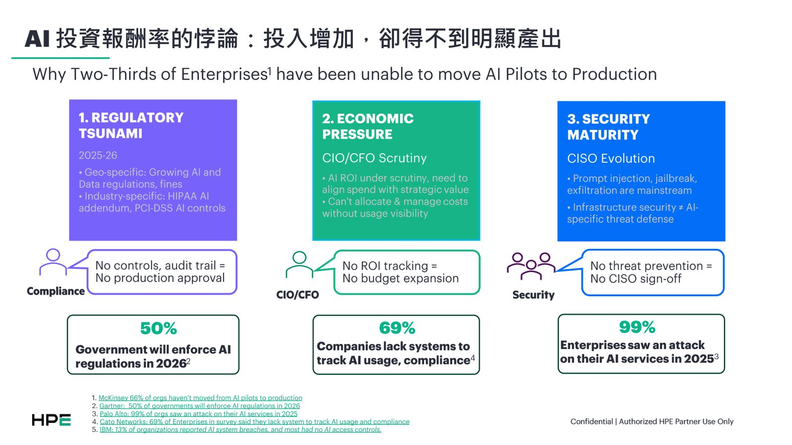
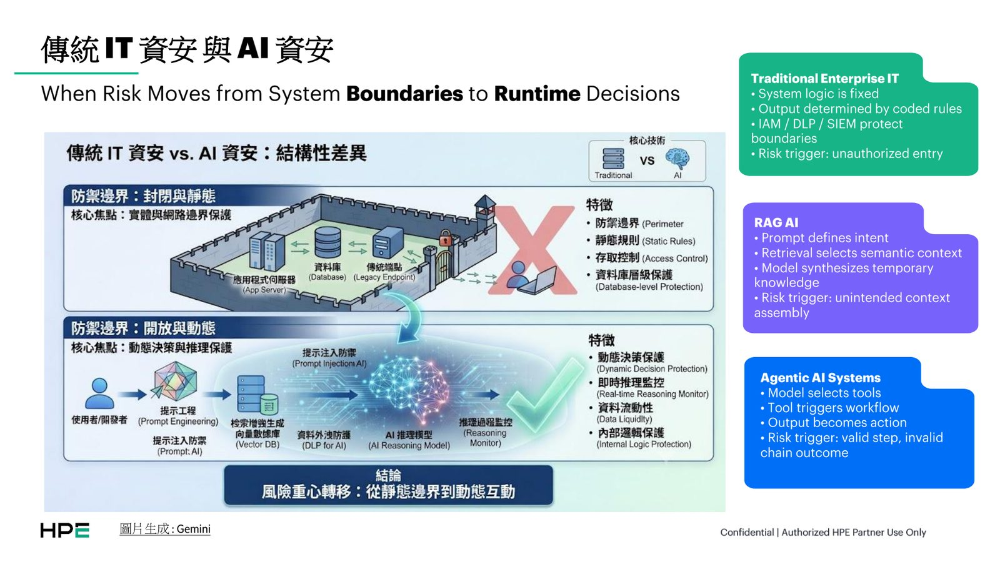
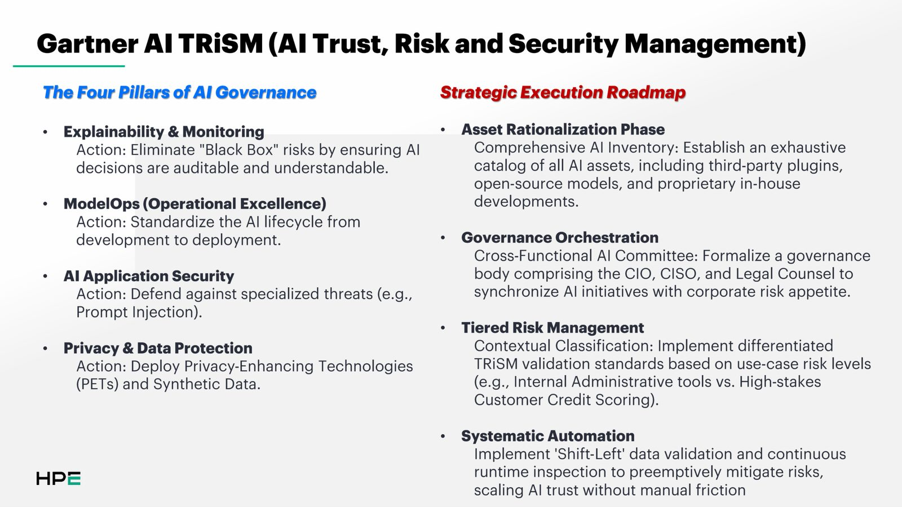
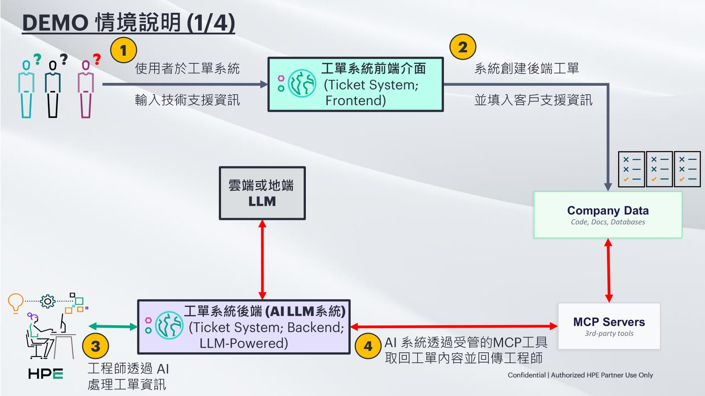

摘要
本講題針對近三分之二企業 AI 專案難以從 PoC 試點走向正式上線的瓶頸，深入探討法規、成本與資安（如 Prompt 注入與資料外洩）三大核心挑戰。講者指出，Agentic AI 的風險觸發點已從「未授權邊界存取」轉變為「單步合法但整條行動鏈結果不合規」的執行期動態決策。為此，議程引用 Gartner AI TRiSM 治理框架，並提出 HPE Private Cloud AI 整合 NVIDIA AI Enterprise 與 DAXA.AI 治理安全平台的解決方案。其技術亮點在於採用「左移（Shift-Left）」架構，捨棄傳統機率式 AI 防火牆，改在資料進入 LLM 前透過安全代理（Safe Agent/Safe RAG）與政策引擎進行輸入語境的感知與過濾。實務上，此架構能有效防範 MCP 工具呼叫時的越權存取與隱私洩漏，協助企業打造安全、合規且可衡量 ROI 的 AI 智能工作流。
重點整理
- 引用多份調查：66% 企業 AI 專案未能從試點走向正式上線；50% 政府將於 2026 年強制 AI 法規；99% 企業曾在 2025 年遭受 AI 服務攻擊；69% 企業缺乏追蹤 AI 使用與合規的系統
- 傳統 IT 資安的風險觸發點是「未授權存取」，但 Agentic AI 系統的風險觸發點變成「單步合法、但整條行動鏈結果不合規」
- 採用 Gartner AI TRiSM（AI Trust, Risk and Security Management）框架的四大治理支柱：可解釋性與監控、ModelOps、AI 應用安全、隱私與資料保護
- HPE Private Cloud AI 整合 NVIDIA AI Enterprise 與 DAXA 治理安全平台，提供 Policy Engine、MCP Catalog、Guardian Agents 與 Safe Agent／Safe RAG 等防護機制
- 強調傳統機率式（Probabilistic）AI 防火牆無法有效防護 Agent 存取真實資料，須採取「Shift-Left」方式，從控制 LLM 輸出轉為控制 LLM 輸入的上下文
重點圖片／架構圖




背景與挑戰
講者指出企業投入 AI 的成本持續增加，卻遲遲看不到明顯的正式上線成果，背後有三大壓力：法規方面，2026 年將有半數政府強制執行 AI 相關法規；成本方面，CIO/CFO 因缺乏 ROI 追蹤機制而不願擴大預算；資安方面，99% 企業在 2025 年曾遭受針對 AI 服務的攻擊，Prompt injection、jailbreak 與資料外洩已成主流威脅。
風險模型的轉變
講者比較傳統企業 IT、RAG AI 與 Agentic AI 系統的風險觸發點差異：傳統 IT 系統邏輯固定、風險觸發於未授權存取；RAG AI 的風險在於非預期的語境組裝；而 Agentic AI 系統由模型自行選擇工具、觸發工作流程並將輸出轉化為實際行動，風險觸發點變成「單一步驟合法，但整條行動鏈的結果不合規」，這使得傳統邊界防護（IAM／DLP／SIEM）不再足夠。
治理框架與技術架構
講者引用 Gartner AI TRiSM 框架，說明企業應建立可解釋性與監控、ModelOps、AI 應用安全、隱私與資料保護四大治理支柱，並依風險層級對 AI 資產進行分級治理。技術面則以 HPE Private Cloud AI 整合 NVIDIA AI Enterprise 軟體堆疊（如 NeMo Guardrails、Curator 等）與 DAXA 治理安全平台，提供 Policy Engine、MCP Catalog、Guardian Agents 及 Safe Inference／Safe Agent／Safe RAG 等機制，強調傳統機率式 AI 防火牆在 Agent 直接存取真實資料時容易失效，必須採取「Shift-Left」策略，從控制 LLM 輸出轉為在資料進入 LLM 前就進行資料感知與政策把關。
案例與成果
講者以工單系統情境示範：使用者於前端輸入技術支援資訊後，AI 系統透過受管的 MCP 工具存取後端工單資料並回傳工程師處理，展示資料感知治理如何嵌入實際企業工作流程。該架構已應用於政府電信、金融醫療、企業資料與科技研發等多個產業場景。
結論與啟示
講者總結，缺乏資料治理的 AI 不能稱作 AI，而是一種責任負債（liability）；企業唯有建立涵蓋資料、模型、程式碼、生態系、存取控制與稽核合規的完整安全架構，才能讓 AI 專案真正從試點走向正式上線並規模化採用。